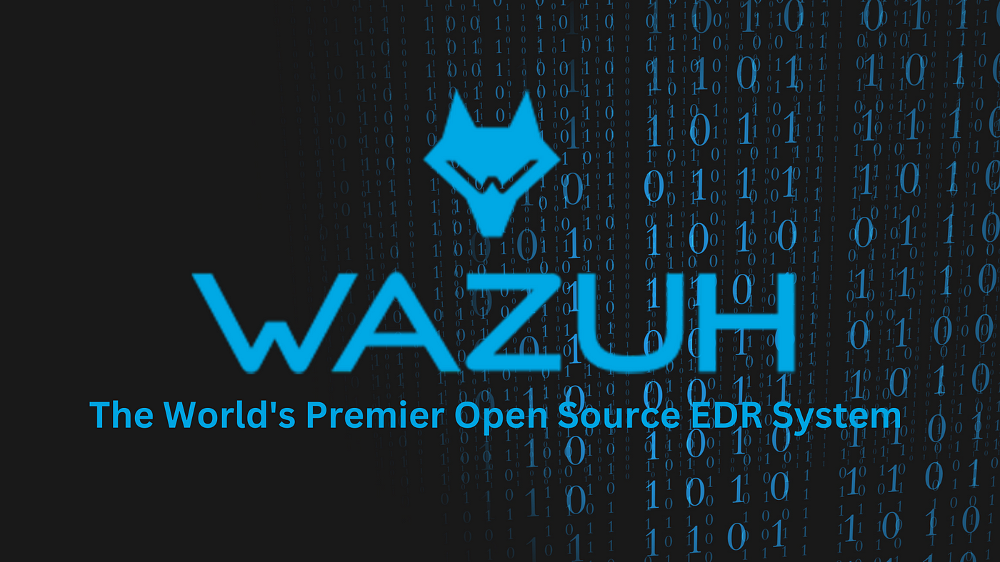
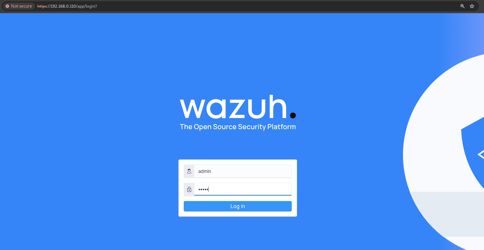
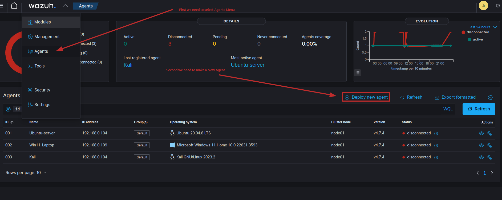
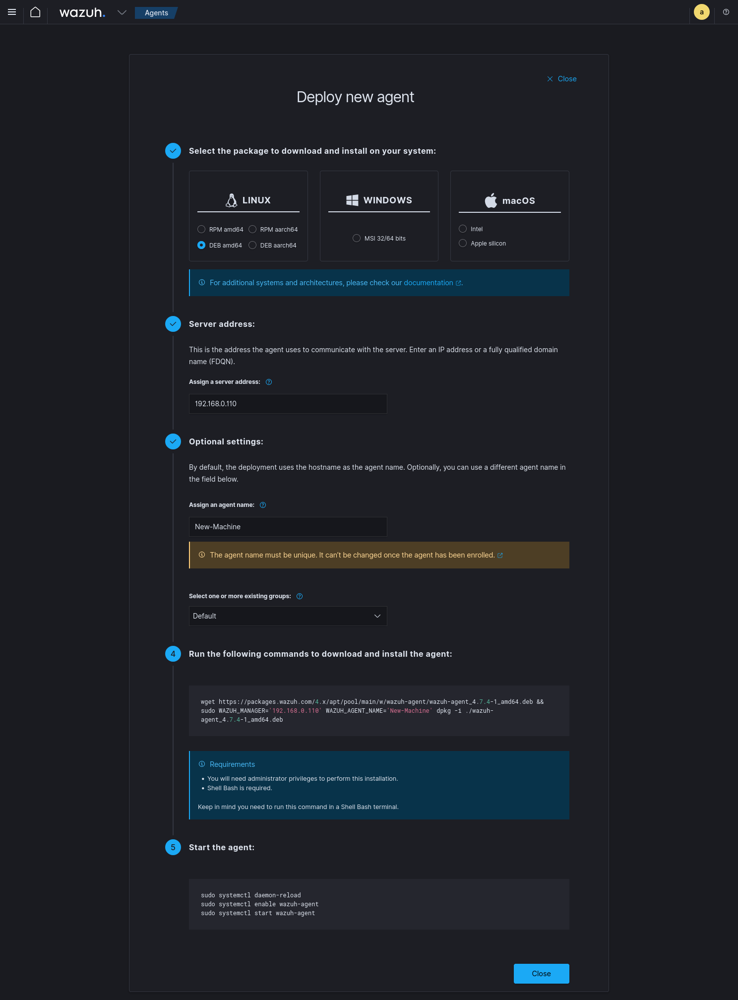

Easy SIEM for Local Area Network or Pentest Lab.
Anomaly detection in cybersecurity is a monitoring capability used to identify suspicious activity or changes in data or networks. By recognizing unusual patterns of behavior, organizations can detect and isolate abnormal activities that may indicate a security threat. Anomalies can occur in various forms of security data, including network traffic, user behavior, and system resource usage.
Advanced anomaly detection techniques can help organizations identify potential threats before they escalate. Implementing anomaly detection strategies can assist organizations in enhancing the protection of their networks and data.
Using a simple and easy approach.
First, download a Virtual Machine. In case something goes wrong or gets broken, I can always restart it or rebuild it from scratch. It is simple: when I start it, I just need to set the IP address in my local network. Start the Wazuh - VM via "VBox" or "VMWare"
Then I can type the address http://192.168.0.110/ in my browser without using SSL "NO https" and login with admin:admin.
Log into Dashboard.
Then select the Agents Menu
I have installed agents on various Windows and Linux systems. Going forward, I will keep a log of activity whenever any of the computers is active. I will also monitor the basic network activity directed towards the computer on which an agent is installed.
Here is how to chose for which platform and just paste it into the terminal.
The following content will show you quick review of Wazuh
I have a few agents installed on different Windows and Linux systems. Moving forward, I will have a record of activity whenever one of the computers is active. I will also monitor the basic network activity towards the computer on which I have installed an agent.